The ALBION multidisciplinary team consists of neurologists, neuropsychologists, dietitians and imaging specialists at Aiginiteio University Hospital.
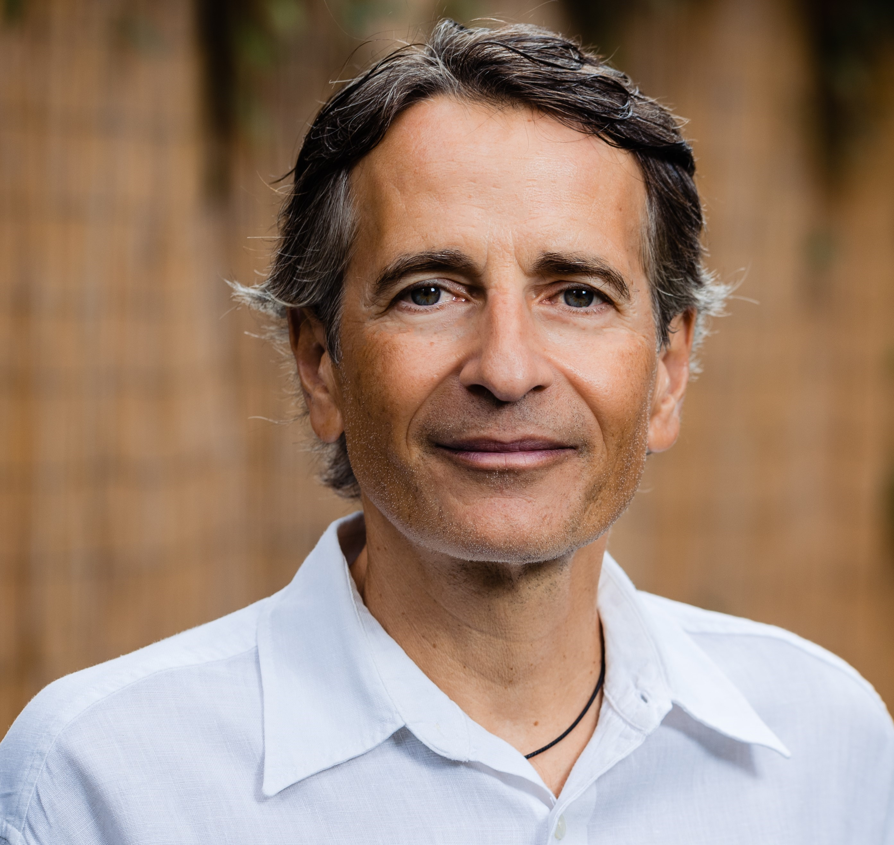
Nikolaos Scarmeas is a Professor of Neurology Professor of Neurology at the Medical School of the National and Kapodistrian University of Athens, while he maintains an Academic affiliation at Columbia University in New York. Dr Scarmeas’ research has focused on cognitive reserve and the factors that help protect the brain against the effects of Alzheimer’s disease and aging, including education, intellectually demanding occupations, and engagement in cognitive, social, and physical activities. He has also made significant contributions to understanding the relationship between dietary patterns, particularly the Mediterranean diet, and dementia, cognitive decline, and healthy aging. For more information, please see here.
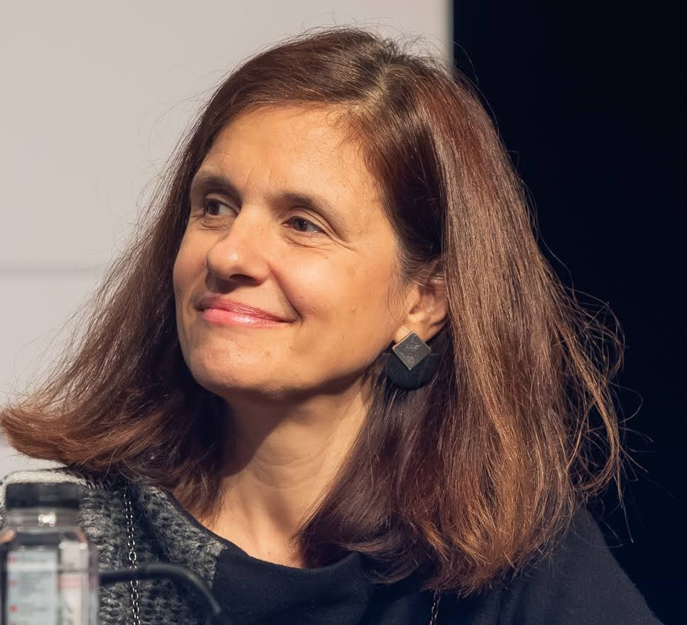
Mary Yannakoulia is a Professor of Nutrition and Eating Behaviour in the Department of Nutrition and Dietetics, Harokopio University, Athens, Greece. Her research interests are related to factors that influence human eating behavior, adherence to diet and lifestyle interventions, as well as diet and aging/cognitive decline. Dr Yannakoulia has served as a co-investigator responsible for the nutritional assessment in the HELIAD and ALBION prospective studies, both of which examine associations between diet and cognitive decline or related biomarkers. She is also leading the nutrition component of the GINGER intervention, a multidomain dementia-prevention trial conducted in Greece.
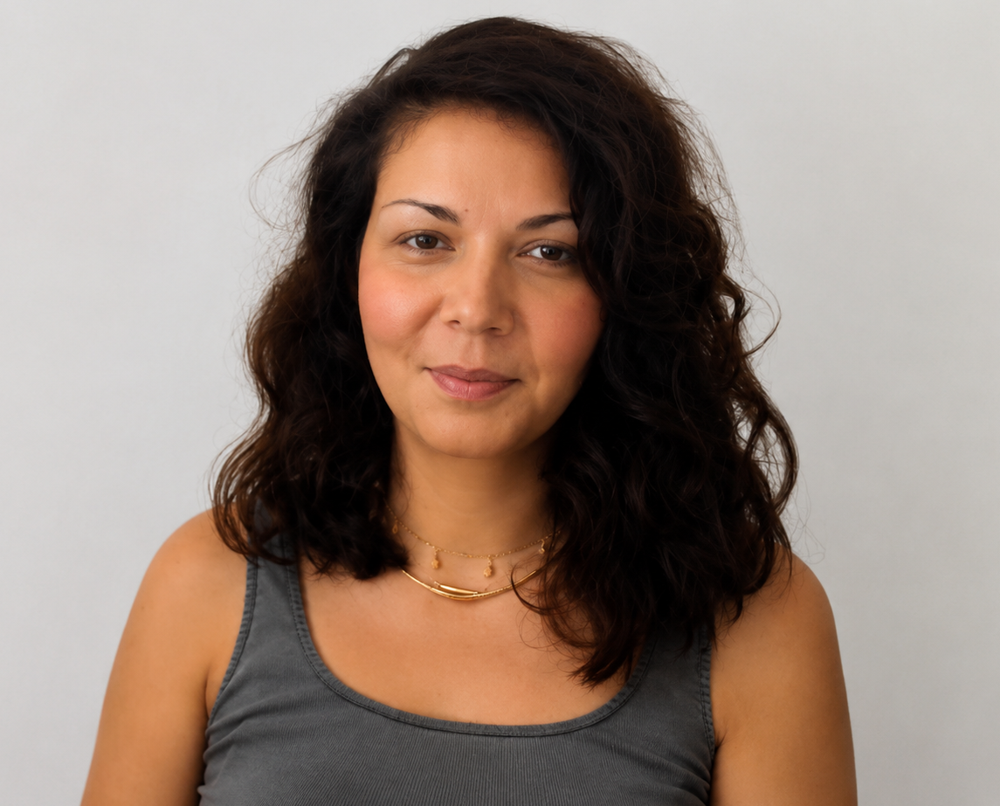
Dr. Faidra Kalligerou graduated from the Medical School of the University of Patras and specialized in Neurology at 251 General Airforce Hospital. She received her PhD from the Medical School of the National and Kapodistrian University of Athens. She currently works as a neurologist at the Athens Alzheimer Association and is a Research Fellow at Aiginitio Hospital.
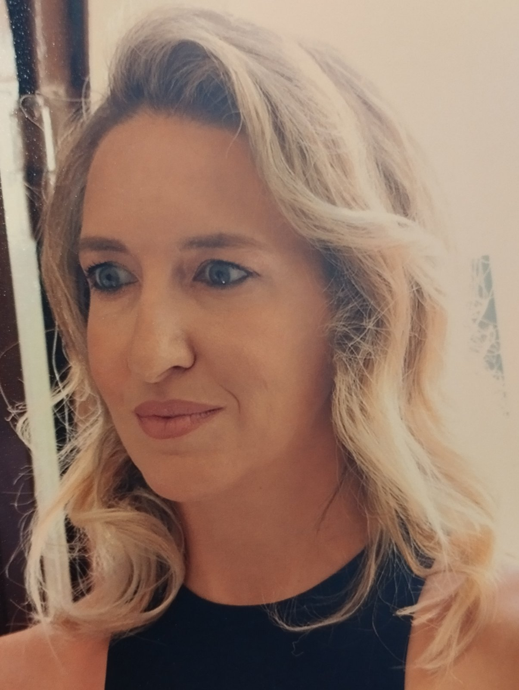
Dr. Argyro Daskalaki is a Neurologist and graduate of the School of Medicine of the National and Kapodistrian University of Athens. She also graduated with distinction from the University's postgraduate programme in Clinical Neuropsychology. She undertook postgraduate clinical training in the United Kingdom, working as a resident physician at Guy's and St Thomas' NHS Foundation Trust, King's College Hospital NHS Foundation Trust, and St George's University Hospitals NHS Foundation Trust in London. She subsequently completed her specialist training in Neurology at the Neurology Department of Evangelismos General Hospital in Athens.
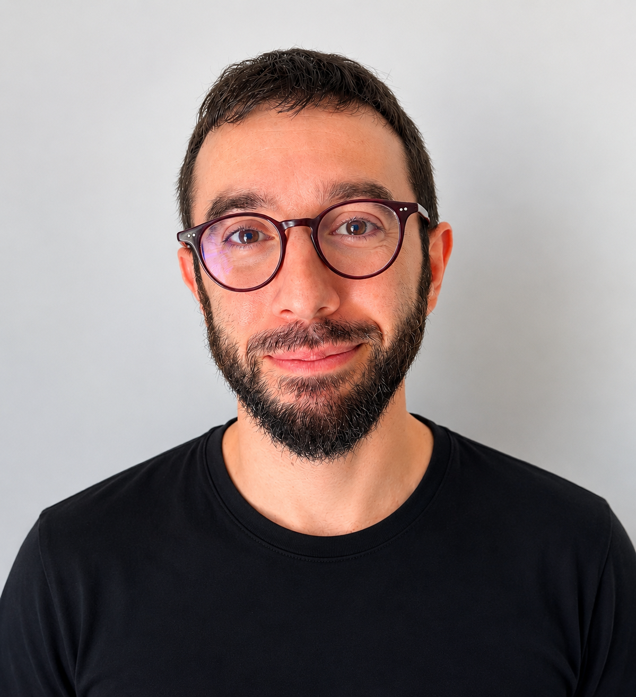
Nikos Giagkou is a neurologist with a clinical and research interest in cognitive disorders and neurodegenerative diseases in general. Since 2025, he has been a member of the Memory Clinic team at Aiginitio Hospital. He enjoys combining clinical neurology with research, and he is particularly interested in approaches that may improve the early diagnosis of neurodegenerative disorders.
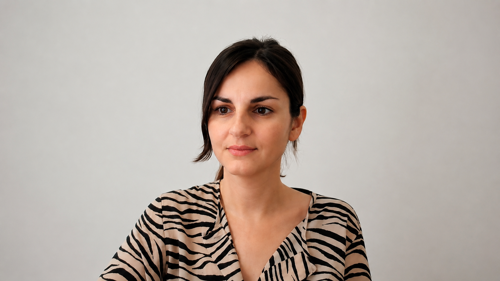
Eva Ntanasi is a Clinical Neuropsychologist with expertise in dementia, cognitive aging, and neurodegenerative disorders. She holds a PhD from Harokopio University and an MSc in Clinical Neuropsychology from the National and Kapodistrian University of Athens. Since 2020, she has been collaborating with the Memory Clinic of Aiginition Hospital, specializing in neuropsychological assessment and dementia research. For more information regarding Ms’ Ntanasi publications, please see here.
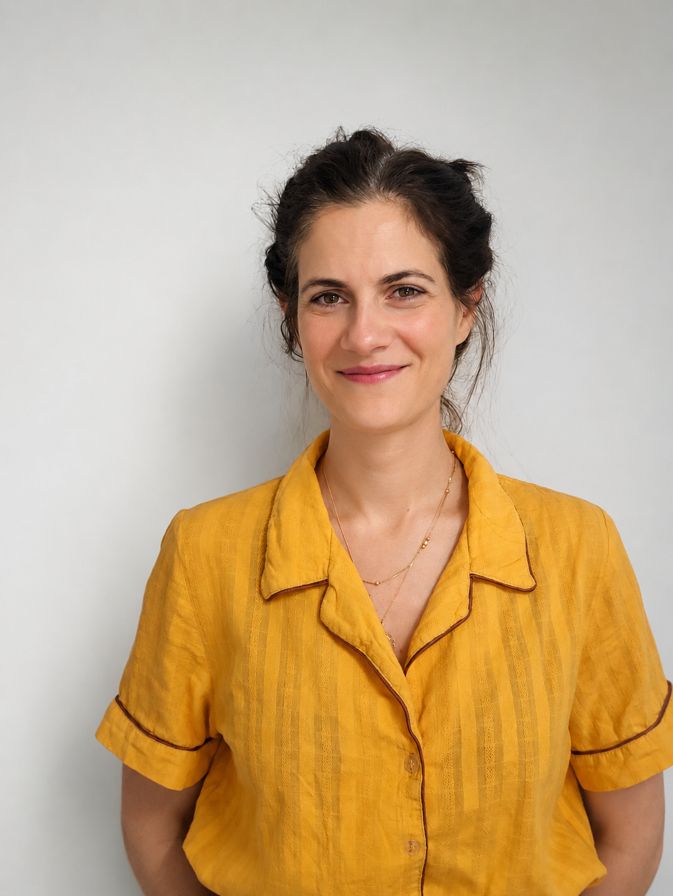
Eirini Mamalaki is a Dietician-Nutritionist, MSc, PhD. Currently, she is a post-doc researcher in the Memory Clinic of the 1st Department of Neurology of the National and Kapodistrian University of Athens (Aiginiteio Hospital). She has participated in many research studies concerning eating habits across the lifespan and the role of lifestyle in preventing cognitive decline. For more information regarding Dr Mamalaki’s publications, please see here.
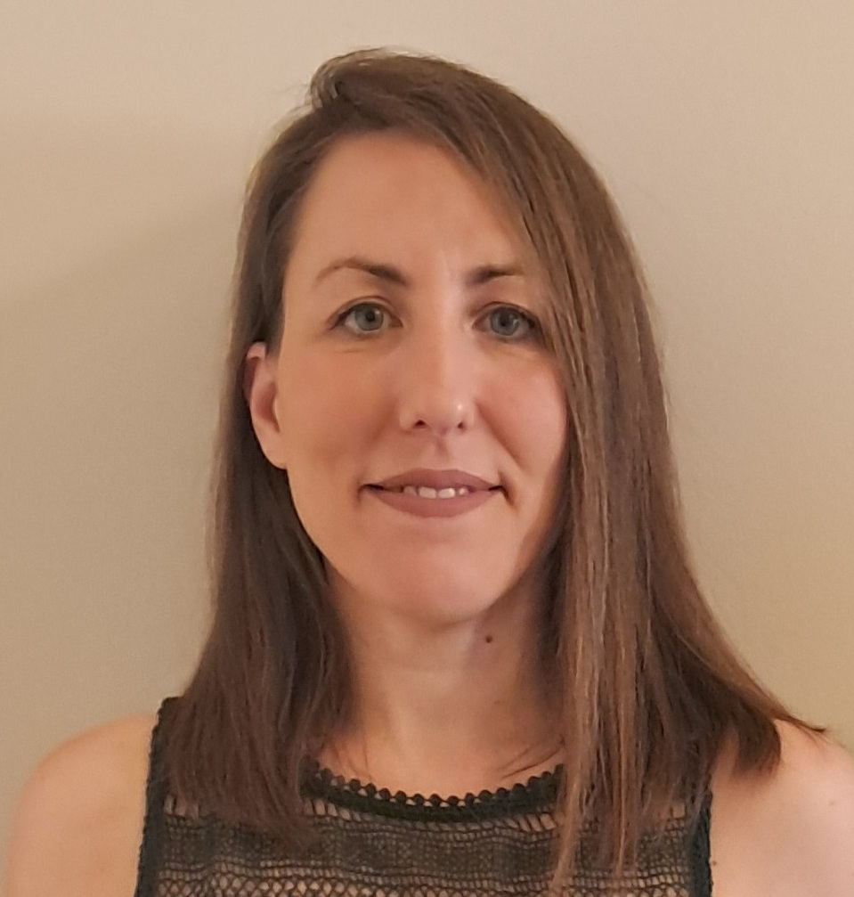
Georgia Tsilikopoulou is a licensed Psychologist specialized in Clinical Neuropsychology. After receiving her bachelor’s degree in Psychology from the National and Kapodistrian University of Athens (NKUA), she completed a three-year master's degree program in Clinical Neuropsychology at the Medical School of NKUA and the Health Science Center of University of Texas (joint program). Her internship took place at the 1st Department of Neurology and the 1st Department of Psychiatry of Eginitio University Hospital, NKUA, as well as at the Pediatric Neurology Department of Pendeli Children’s Hospital.
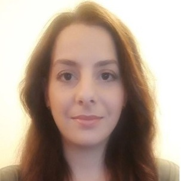
Angeliki Fotopoulou is a graduate of Nursing of National and Kapodistrian University of Athens (2012) and owns a master diploma of “Management and Administration of Health Care Services” (2014). In 2012 completed her graduate training in “Educational Pathologic Clinic B” of Attikon University Hospital. Since 2013 she has been employed as a nurse in various private hospitals in Athens, specialized in Intensive Care Units owing a manager degree in the last few years. At the same time she was involved in adults’ clinical education and took part in clinical trials as clinical coordinator. At present, she is a member of Cognitive Disorders Clinic of Eginition University Hospital. Her clinical and research interests focus on dementia and cognitive function.
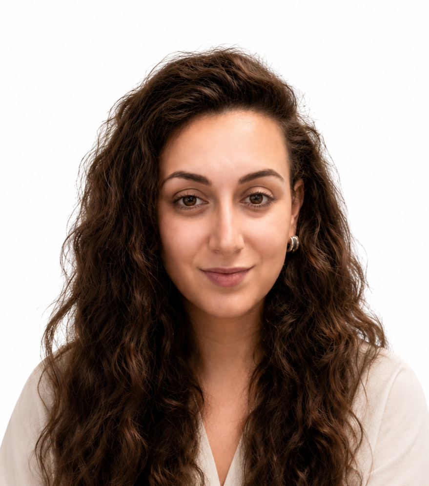
Since 2023, Aikaterini Petroulaki she has been a member of the research team at the Memory Clinic and Cognitive Disorders Unit of the Aiginition University Hospital, where she is responsible for the coordination and administrative support of clinical and research studies. Her duties include organizing and monitoring study procedures, managing communication with participants and collaborating institutions, and ensuring the smooth operation of the Memory Clinic. In parallel, she serves as Study Coordinator for the Albion study, which is conducted as part of the Clinic’s research activities.
Dora Brikou is a dietitian-nutritionist and holds a BSc (2013), an MSc (2015) and a PhD (2026) from Harokopio University. She has over 10 years of experience as a research associate, contributing to 10 funded national and European research projects. Her work has resulted in 11 scientific publications in peer-reviewed journals. Her scientific interests and clinical expertise focus on the assessment of dietary intake and meal patterns, with particular emphasis on their role in weight management and cognitive health.
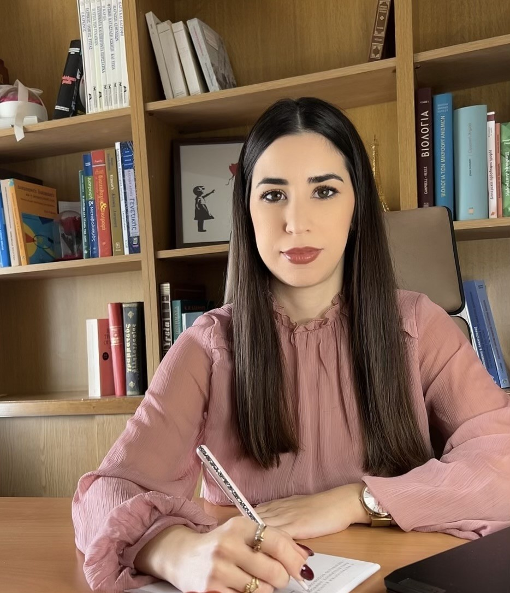
Archontoula Drouka is a PhD candidate at the Department of Nutrition and Dietetics, School of Health Sciences and Education at Harokopio University of Athens. She holds a Bachelor’s degree in Nutrition and Dietetics (2019) and an MSc in Clinical Nutrition and Dietetics (2021). Her research focuses on the role of diet and lifestyle in cognitive function and early biomarkers of dementia, with particular emphasis on preventive approaches across the lifespan.